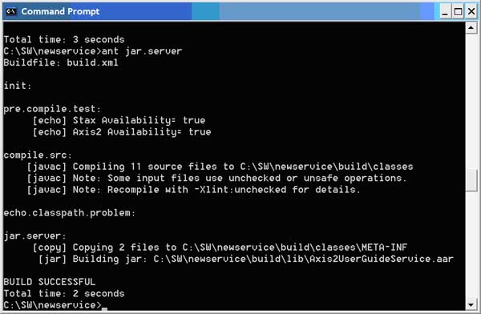
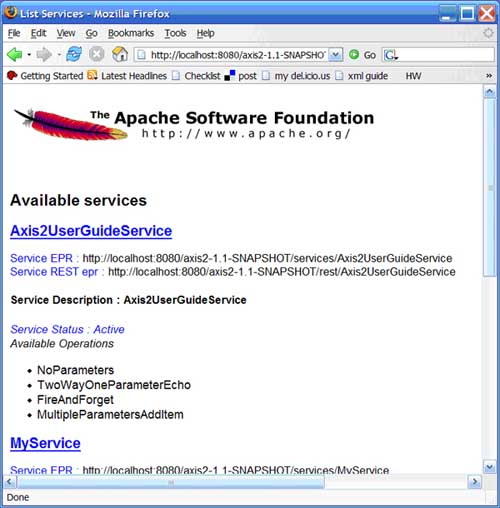

Apache Axis2 User's Guide -Building Services
Now that you know how to use Axis2 to generate clients from WSDL, this section digs a little deeper showing you how to create services, and also how to create services and clients "from scratch", so to speak.
- Introducing Axis2
- Installing and Testing Client Code
- Introduction to
Services
- Creating
Clients
- Building
Services
- Samples
- For Further Study
Getting Comfortable with the Available Options
Axis2 provides a number of ways to create a service, such as:
- Create a service and build it from scratch. In this case, you build your service class to specifically access AXIOM OMElement objects, then create the services.xml file and package it for deployment.
- Deploy Plain Old Java Objects (POJOs) as a service.
- Generate the service from WSDL. Just as you can generate clients with WSDL, you can also generate the skeleton of a service.
Let's look at these three options.
Creating a Service from Scratch
Creating a service from scratch is not the most convenient way to do it, but it does give you the most control. The process involves several steps.
The short story:
- Create the service class with each operation that is represented by a method that takes an org.apache.axiom.om.OMElement object as its argument. (An OMElement is how the AXIs2 Object Model (AXIOM) represents an XML element.)
- Create the service descriptor, services.xml, which defines the class to be used by the service and the appropriate message receivers.
- Create the .aar file, with the classes in their proper locations based on the package and the services.xml file in the META-INF directory.
- Deploy the .aar file by using the Web Administration application or by copying it to the Axis2 services directory.
The long story:
Start by creating the service class, a plain Java class that uses classes from the Axis2 libraries (see Code Listing 8).
Code Listing 8-Creating the Service Class
package org.apache.axis2.axis2userguide;
import javax.xml.stream.XMLStreamException;
import org.apache.axiom.om.OMAbstractFactory;
import org.apache.axiom.om.OMElement;
import org.apache.axiom.om.OMFactory;
import org.apache.axiom.om.OMNamespace;
public class SampleService {
public OMElement sayHello(OMElement element)
throws XMLStreamException {
element.build();
element.detach();
String rootName = element.getLocalName();
System.out.println("Reading "+rootName+" element");
OMElement childElement = element.getFirstElement();
String personToGreet = childElement.getText();
OMFactory fac = OMAbstractFactory.getOMFactory();
OMNamespace omNs = fac.createOMNamespace(
"http://example1.org/example1", "example1");
OMElement method = fac.createOMElement("sayHelloResponse",
omNs);
OMElement value = fac.createOMElement("greeting", omNs);
value.addChild(fac.createOMText(value, "Hello,
"+personToGreet));
method.addChild(value);
return method;
}
private void ping(){
}
}
Make sure to include Axis2 libraries in your class path when compiling the source.
Axis2 uses AXIOM, or the AXIs Object Model, a DOM (Document Object Model) -like structure that is based on the StAX API ( Streaming API for XML). Methods that act as services must take an OMElement as their argument, which represents the payload of the incoming SOAP message. (An OMElement is just AXIOM's way of representing an XML element, like a DOM Element object.) In this case, you're extracting the contents of the first child of the payload element, adding text to it, and using it as content for the return OMElement. Unless this is an "in only" service, these methods must return an OMElement, because that becomes the payload of the return SOAP message.
To turn this class into a service, create the service description file, services.xml, as in Code Listing 9.
Code Listing 9 - Create the Service Description
<service name="UserGuideSampleService">
<description>
This is a sample service created in the Axis2 User's Guide
</description>
<parameter name="ServiceClass"
>org.apache.axis2.axis2userguide.SampleService
</parameter>
<operation name="sayHello">
<messageReceiver
class="org.apache.axis2.receivers.RawXMLINOutMessageReceiver"/>
</operation>
<operation name="ping">
<messageReceiver
class="org.apache.axis2.receivers.RawXMLINOnlyMessageReceiver"/>
</operation>
</service>
This document defines the service, called by the Web Administration Application, and the class used to serve requests. For each operation, it defines the appropriate message receiver class.
Create a new directory, META-INF, in the main directory for the class. (In this case, that's the same directory that contains the org directory) and place the services.xml file in it.
Create the .aar file by typing: jar cvf SampleService.aar ./*
Deploy the SampleService.aar file by using the Web Administration application or by copying it to the Axis2 services directory.
Now you can create a client class that accesses the service directly (see Code Listing 10).
Code Listing 10 - Create a Client Class that Accesses the Service Directly
package org.apache.axis2.axis2userguide;
import javax.xml.stream.XMLStreamException;
import org.apache.axiom.om.OMAbstractFactory;
import org.apache.axiom.om.OMElement;
import org.apache.axiom.om.OMFactory;
import org.apache.axiom.om.OMNamespace;
import org.apache.axis2.addressing.EndpointReference;
import org.apache.axis2.client.Options;
import org.apache.axis2.Constants;
import org.apache.axis2.client.ServiceClient;
public class SampleClient {
private static EndpointReference targetEPR =
new EndpointReference(
"http://localhost:8080/axis2/services/UserGuideSampleService");
public static OMElement greetUserPayload(String personToGreet) {
OMFactory fac = OMAbstractFactory.getOMFactory();
OMNamespace omNs = fac.createOMNamespace(
"http://example1.org/example1", "example1");
OMElement method = fac.createOMElement("sayHello", omNs);
OMElement value = fac.createOMElement("personToGreet",
omNs);
value.addChild(fac.createOMText(value, personToGreet));
method.addChild(value);
return method;
}
public static void main(String[] args) {
try {
OMElement payload =
SampleClient.greetUserPayload("John");
Options options = new Options();
options.setTo(targetEPR);
options.setTransportInProtocol(Constants.TRANSPORT_HTTP);
ServiceClient sender = new ServiceClient();
sender.setOptions(options);
OMElement result = sender.sendReceive(payload);
String response = result.getFirstElement().getText();
System.out.println(response);
} catch (Exception e) { //(XMLStreamException e) {
System.out.println(e.toString());
}
}
}
This class uses the same technique of sending and receiving OMElements, but it's also important to note the use of the Options class. This class enables you to determine properties such as the transport used for the return message (the transport used for the outgoing message can be inferred from the URL of the destination) and the SOAP version to use. In addition to providing setter and getter methods of specific properties that affect how the client interacts with the service, the Options class enables you to create inheritance relationships between Options objects. So if a property is not found in the current Options object used, the client can check the parent Options object of the current Options object.
Compile and run the above SampleClient.java. Make sure to have all axis2 libraries in your class path. If all has gone well, 'Hello, John' will be shown as the output in the console.
Deploying Plain Old Java Objects (POJOs)
One very easy way to create a Web service is simply to deploy the Java objects that represent the service. Start with the class, shown in Code Listing 11.
Code Listing 11 - Creating the Class SampleService
package org.apache.axis2.axis2userguide;
public class SampleService {
public void doInOnly(){
return;
}
public String noParameters(){
return "Hello";
}
public String twoWayOneParameterEcho(String toEcho){
return toEcho;
}
public boolean multipleParametersAdd(float price, int itemId,
String description, String itemName){
//Code to handle the logic
return true;
}
}
Next, you'll need to tell Axis2 what class corresponds with what Web service calls. Do this by creating a file called services.xml and adding the following shown in Code Listing 12.
Code Listing 12 - Creating services.xml
<service name="SampleService" scope="application">
<description>
Sample Service
</description>
<messageReceivers>
<messageReceiver
mep="http://www.w3.org/ns/wsdl/in-only"
class="org.apache.axis2.rpc.receivers.RPCInOnlyMessageReceiver"/>
<messageReceiver
mep="http://www.w3.org/ns/wsdl/in-out"
class="org.apache.axis2.rpc.receivers.RPCMessageReceiver"/>
</messageReceivers>
<parameter name="ServiceClass">
org.apache.axis2.axis2userguide.SampleService
</parameter>
</service>
This file makes the InOnly and InOut MEPs available to the service and tells Axis2 which class to call; operations must match method names. In other words, Axis2 automatically sends a call to the multipleParametersAdd operation to the org.apache.axis2.axis2userguide.SampleService.multipleParametersAdd() method.
Now it's time to create the distribution. Arrange your files in the following directory structure (see Code Listing 13).
Code Listing 13- Create the Directory Structure for the Distribution
- SampleService
- META-INF
- services.xml
- org
- apache
- axis2
- axis2userguide
- SampleService.class
Finally, deploy the service by copying the SampleService directory to the webapps/axis2/WEB-INF/services directory on the servlet engine. You can check to make sure that it's been properly deployed by checking http://<host>:<port>/axis2/services/listServices.
Deploying and Running an Axis2 Service Created from WSDL
If you have a WSDL file, you can easily create and deploy a service based on that description. For example, to create a service based on the same WSDL file used in the clients section of this document, you will follow the steps below.
The short story:
- Download the Axis2 standard distribution, if you have not done so already.
- Generate the skeleton using the WSDL2Java utility, as in:
java org.apache.axis2.wsdl.WSDL2Java -uri file:///C:/apps/axis2/samples/zSample/Axis2UserGuide.wsdl -p org.apache.axis2.axis2userguide -d adb -s -wv 1.1 -ss -sd -ssi
- Open the *Skeleton.java file and add the functionality of your service to the generated methods.
- Build a service using Ant by typing ant jar.server
- Deploy the service by copying the build/lib/*.aar file to <J2EE_HOME>/webapps/axis2/WEB-INF/services
- Check http://<server>:<port>/axis2/services/listServices to make sure the service has been properly deployed.
The long story:
As with generating clients, you will need the Axis2 Standard Distribution, because the Axis2 WAR Distribution does not include the WSDL2Java utility. Once you've got it downloaded and unpacked, make sure that you set the AXIS2_HOME variable to point to the location in which you've unpacked it.
Now you are ready to generate the actual service. To keep things neat, create a new directory and change to it. The WSDL file is the same one referenced in Generating Clients and includes four operations: NoParameters, TwoWayOneParameterEcho, MultipleParametersAddItem, and DoInOnly. To generate the service, use the WSDL2Java utility, as in Code Listing 14.
Code Listing 14 - Using the WSDL2Java Utility to Generate the Service
Code Listing 14.1:
java org.apache.axis2.wsdl.WSDL2Java -uri file:///C:/apps/axis2/samples/zSample/Axis2UserGuide.wsdl -p org.apache.axis2.axis2userguide -d adb -s -wv 2.0.0 -ss -sd
Note: Make sure all the .jar files in the Axis2 lib directory is set to the CLASSPATH before you run the above code.
This statement tells the utility you want to create a service out of the operations in the file Axis2UserGuide.wsdl, and that the Java classes generated should be in the org.apache.axis2.axis2userguide package (-p). (You can view the appropriate directories created.) It also indicates that you want to use the Axis2 DataBinding Framework, or ADB (-d), to generate only synchronous or blocking code (-s), and to generate server-side code (-ss) as opposed to a client, including the services.xml service descriptor file (-sd). It also specifies version 2.0.0 for the WSDL file (-wv).
Code Listing 14.2:
You can also use the following script files to achieve the same. In this case you do not have the set the CLASSPATH manually.
For Linux:
$AXIS2_HOME/bin/wsdl2java.sh -uri file:///C:/apps/axis2/samples/zSample/Axis2UserGuide.wsdl -p org.apache.axis2.axis2userguide -o target_directory_name -d adb -s -wv 2.0.0 -ss -sd
For MS Windows:
%AXIS2_HOME%\bin\wsdl2java.bat -uri file:\\\C:\apps\axis2\samples\zSample\Axis2UserGuide.wsdl -p org.apache.axis2.axis2userguide -o target_directory_name -d adb -s -wv 2.0.0 -ss -sd
In both instances, at this point, you should see four new items in your chosen directory: the build.xml file, which includes instructions for Ant, the src directory, which includes all the generated classes and stubs, the resources directory, which includes a regenerated version of the WSDL, and the services.xml file, which ultimately controls the service's behavior.
You can compile the service at this point, but it doesn't actually do anything yet. You can solve that problem by opening the src\org\apache\axis2\axis2userguide\Axis2UserGuideServiceSkeleton.java file and either editing the code in bold -- make sure you manage parameter numbers -- or replacing all the code with the following in Code Listing 15.
Code Listing 15 - Compiling the Service
/**
* Axis2UserGuideServiceSkeleton.java
*
* This file was auto-generated from WSDL
* by the Apache Axis2 version: SNAPSHOT Oct 15, 2006 (11:23:18
GMT+00:00)
*/
package org.apache.axis2.axis2userguide;
/**
* Axis2UserGuideServiceSkeleton java skeleton for the axisService
*/
public class Axis2UserGuideServiceSkeleton {
/**
* Auto generated method signature
* @param param7
*/
public org.apache.axis2.axis2userguide.NoParametersResponse
NoParameters
(org.apache.axis2.axis2userguide.NoParametersRequest param7)
{
System.out.println(param7);
NoParametersResponse res =
new NoParametersResponse();
return res;
}
/**
* Auto generated method signature
* @param param9
*/
public
org.apache.axis2.axis2userguide.TwoWayOneParameterEchoResponse
TwoWayOneParameterEcho
(
org.apache.axis2.axis2userguide.TwoWayOneParameterEchoRequest
param9
)
{
System.out.println(param9.getEchoString());
TwoWayOneParameterEchoResponse res =
new TwoWayOneParameterEchoResponse();
res.setEchoString(param9.getEchoString());
return res;
}
/**
* Auto generated method signature
* @param param11
*/
public void DoInOnly
(
org.apache.axis2.axis2userguide.DoInOnlyRequest param11
)
{
System.out.println(param11.getMessageString());
}
/**
* Auto generated method signature
* @param param12
*/
public
org.apache.axis2.axis2userguide.MultipleParametersAddItemResponse
MultipleParametersAddItem
(
org.apache.axis2.axis2userguide.MultipleParametersAddItemRequest
param12
)
{
System.out.println(param12.getPrice());
System.out.println(param12.getItemId());
System.out.println(param12.getDescription());
System.out.println(param12.getItemName());
MultipleParametersAddItemResponse res =
new MultipleParametersAddItemResponse();
res.setSuccessfulAdd(true);
res.setItemId(param12.getItemId());
return res;
}
}
As with generating clients, all these classes, such as MultipleParametersAddItemRequest and TwoWayOneParameterEchoResponse, are generated by the utility, and can be found in the same directory as the skeleton file. They include methods such as setSuccessfulAdd(), which sets the value of the content of an element in the response, and getItemName(), which retrieves the content of elements in the request.
Save the file and compile it by typing: ant jar.server
If all goes well, you should see the BUILD SUCCESSFUL message in your window, and the Axis2UserGuideService.aar file in the newly created build/lib directory.

Now you need to deploy the service to the server. To do that, copy the Axis2UserGuideService.aar file to the WEB-INF/services directory of the application server. (You also have the option to use the administration tools. See the Web Administrator's Guide for more information.)
To verify that the service has been properly deployed, check the list of services at http://<host>:<port>/axis2/services/listServices.

Now you should be able to access the service using any of the clients built in the Generating Clients document.
See Next Section- Samples